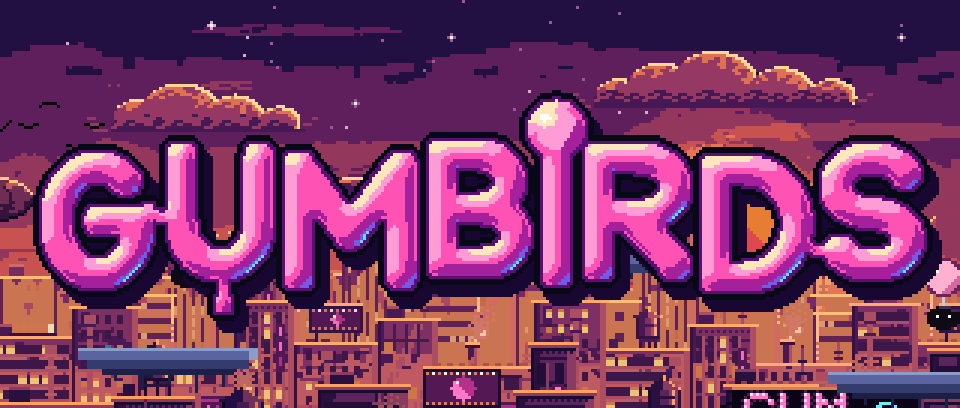
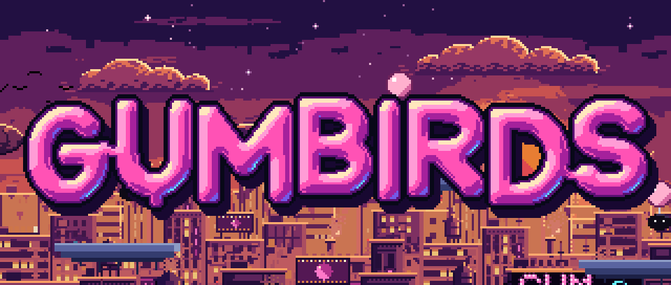
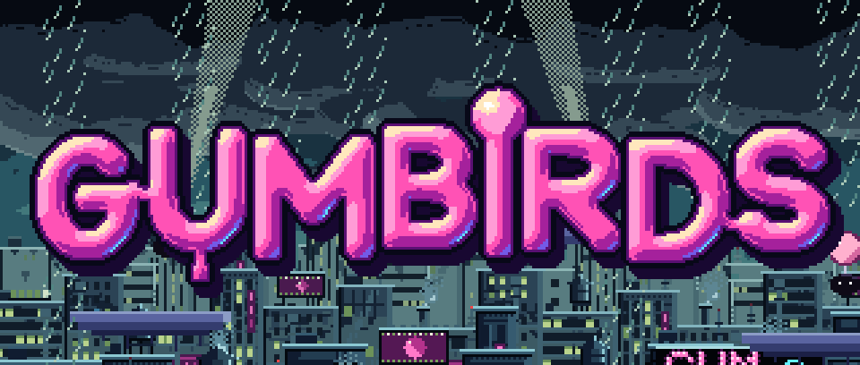
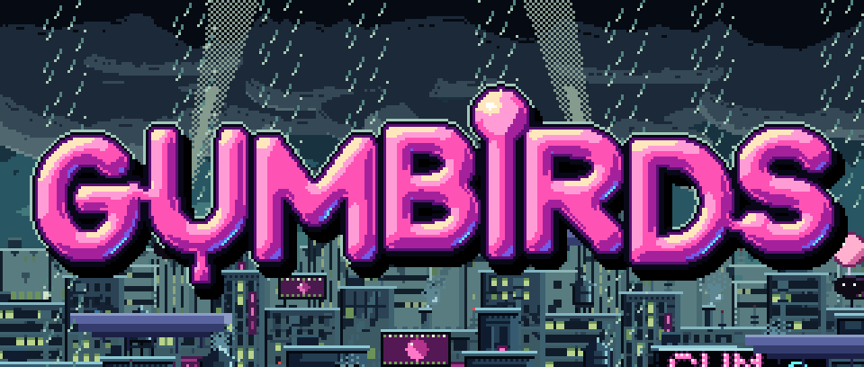
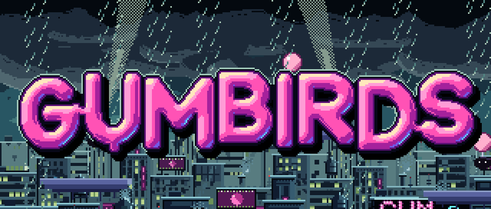
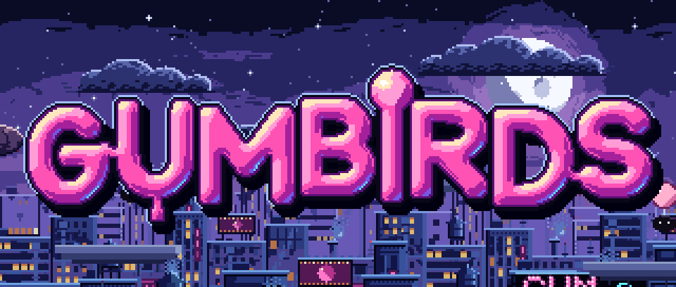
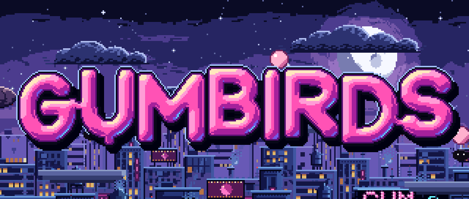

The outer rim of the logo has its own palette entry now (index 11); letter counters and the lines between letters keep the dark line entry (index 8). No pixel moved and no gum colour changed. Per mood only two entries differ: rim and drop shadow. Each picture is the top 136 screen lines at 3x. Scroll a row sideways. Weak edge = share of outer logo pixels with contrast ratio under 1.5 against the sky next to them.
Palette entries used: 11 of 15 (was 10). Unique 16x16 tiles with flips reused: 130 before, 130 after (body 123 to 123, free pieces 7 to 7).
Dusk
Rim keeps the dark line colour, shadow unchanged: the redraw is the accepted logo, pixel for pixel (0 differing pixels).
Accepted logo Weak edge 3.2% (animation frames 2.9% to 4.1%). Mean contrast 3.77, lowest 1.01.

Redraw, still Rim 8,8,24. Shadow 24,8,49. Weak edge 3.2% (animation frames 2.9% to 4.1%). Mean contrast 3.77, lowest 1.01.

Redraw, animation 10 frames, timing of the final folder (110 110 110 110 110 260 90 90 110 200 ms), free gum pieces included.
Storm
Rim takes the storm light, shadow goes black.

Accepted logo Weak edge 17.9% (animation frames 16.1% to 19.2%). Mean contrast 3.03, lowest 1.01.

Redraw, still Rim 160,200,184. Shadow 0,0,0. Weak edge 5.2% (animation frames 4.6% to 6.2%). Mean contrast 4.54, lowest 1.02.

Redraw, animation 10 frames, timing of the final folder (110 110 110 110 110 260 90 90 110 200 ms), free gum pieces included.
Moon
Rim takes the moonlight, shadow goes blue-black.
Accepted logo Weak edge 11.7% (animation frames 9.9% to 14.3%). Mean contrast 3.00, lowest 1.01.

Redraw, still Rim 160,192,248. Shadow 0,0,16. Weak edge 4.8% (animation frames 4.8% to 5.9%). Mean contrast 4.05, lowest 1.01.

Redraw, animation 10 frames, timing of the final folder (110 110 110 110 110 260 90 90 110 200 ms), free gum pieces included.
Joins at 6x
Still frame over storm and moon, left half above right half: where the lines between letters, the drip and the counters meet the rim.